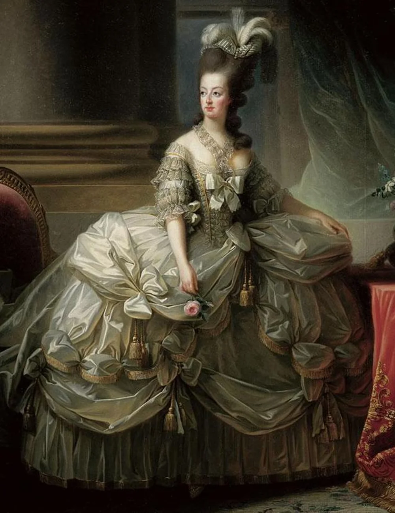

Inicialmente, a pele de animais começou a ser usada para a confecção das roupas, e depois veio a descoberta de tecidos diferenciados e como fazer a coloração destes tecidos, e assim, foram sendo aperfeiçoadas.
Antes desta maior noção sobre o estudo de roupas, tecidos e estilos, as roupas eram usadas de forma padronizada, desde a infância até a morte. Na Idade Média, as roupas usadas diferenciavam-se de acordo com a classe social. Havia cores próprias para o uso somente dos nobres, por exemplo. O vermelho era uma cor utilizada somente por eles, extremamente cara , bastante rara por ser produzida a partir de recursos naturais, minerais e além disso ter um simbolismo religioso.
Devido ao crescimento da burguesia, os ricos burgueses começaram a imitar o estilo de roupa da nobreza, o que obrigou os costureiros a produzirem estilos diferentes para fazer a diferenciação entre as classes. A popularização da moda expandiu na Revolução Industrial, no século XVIII, pois os custos dos tecidos foram reduzidos, permitindo que até os mais humildes pudessem comprar e vestir-se bem.
As mulheres ainda eram limitadas a usar roupas sob medida, como vestidos longos com espartilhos e enchimentos. Todavia, com o surgimento da alta costura na década de 1920, estilistas como Coco Chanel começaram a criar novos estilos, e logo ganhou grande destaque. Nas décadas seguintes, a moda se democratizou ainda mais, com a indústria de cosméticos ganhando importância e os desfiles de moda se tornando cada vez mais populares.
